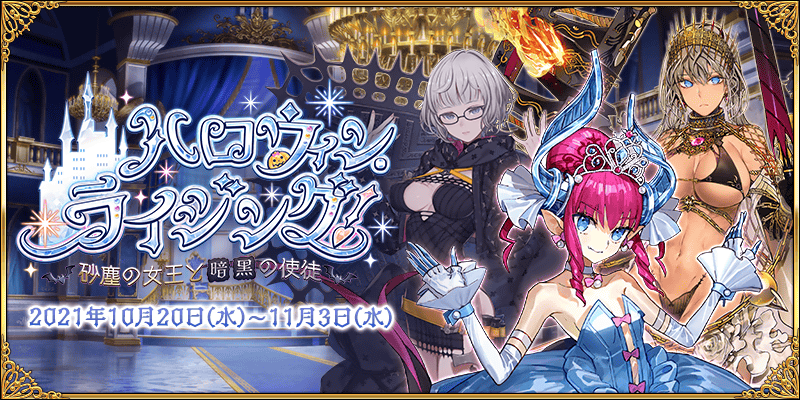
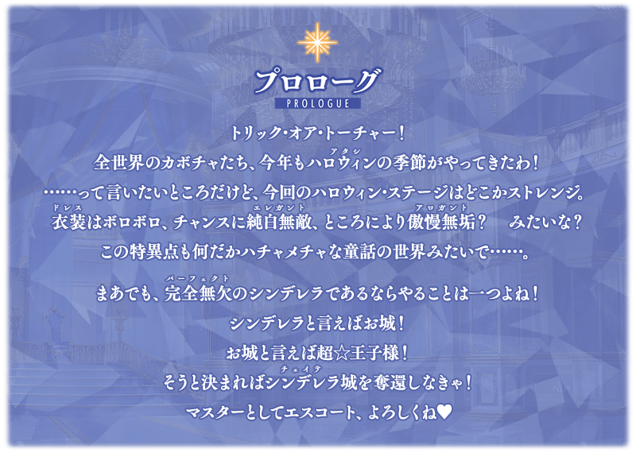
舉辦期間限定活動「萬聖節・崛起！ ～砂塵女王與暗黑使徒～」！
與灰姑娘(？)伊莉降醬一起以灰姑娘城為目標在微小特異點奔走！最後，在前方等待的是……。
本活動中進行主線關卡的話，活動限定從者「★4(SR)伊莉莎白・巴托里〔灰姑娘〕」將以期間限定暫時加入。
推進主線關卡，讓「★4(SR)伊莉莎白・巴托里〔灰姑娘〕」正式加入吧！
並且，收集各關卡中可入手活動道具交換各種報酬。通過關卡來入手各種報酬吧！
※本頁面皆為開發中圖片。會有與實際圖片相異的情況。 ※一部份的關卡為日後開放。
◆活動舉辦期間◆
2021年10月20日(三) 19:30～11月3日(三) 11:59
◆活動參加條件◆
滿足以下條件的御主才能參加
・通過「第一特異點 邪龍百年戰爭 奧爾良」
※期間限定活動「萬聖節・崛起！ ～砂塵女王與暗黑使徒～」舉辦期間中，，預定為了一部份問題修正而實施維修。維修中無法遊玩遊戲，敬請注意。
關於維修的詳情請自下述URL確認。
https://news.fate-go.jp/2021/1027uxzl/
■維修預定時間
2021年10月26日(二) 23:00～10月27日(三) 4:00(預定)
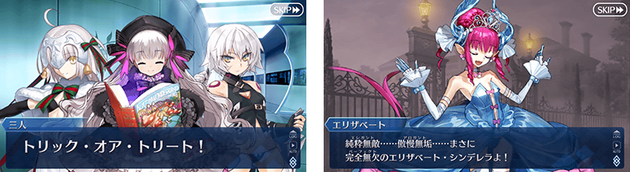
※在2018年12月31日(二) 23:00以後新配信的主線故事及期間限定活動、一部份關卡、宣傳活動及召喚中，會顯示隱藏真名的對象從者真名。

在「Fate/Grand Order」官方網站內首頁及Gallery，公開了期間限定活動「萬聖節・崛起！ ～砂塵女王與暗黑使徒～」的電視廣告。敬請確認。
動畫製作：A-1 Pictures
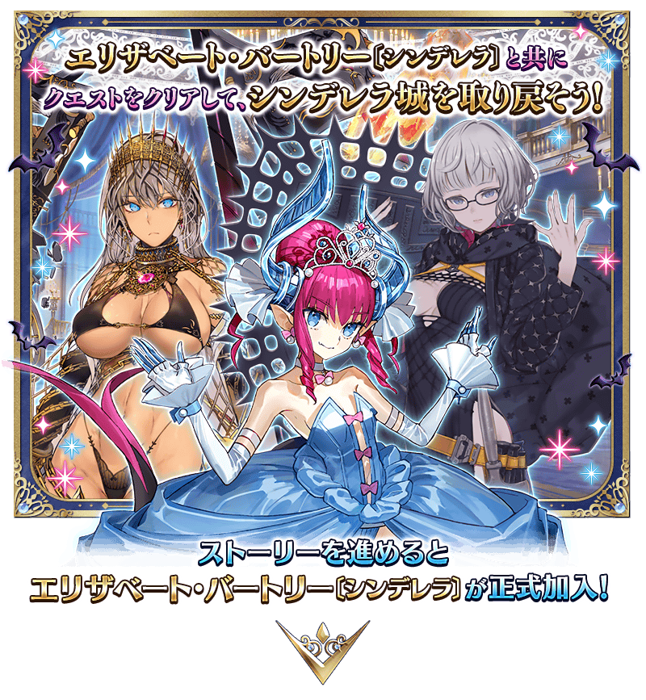
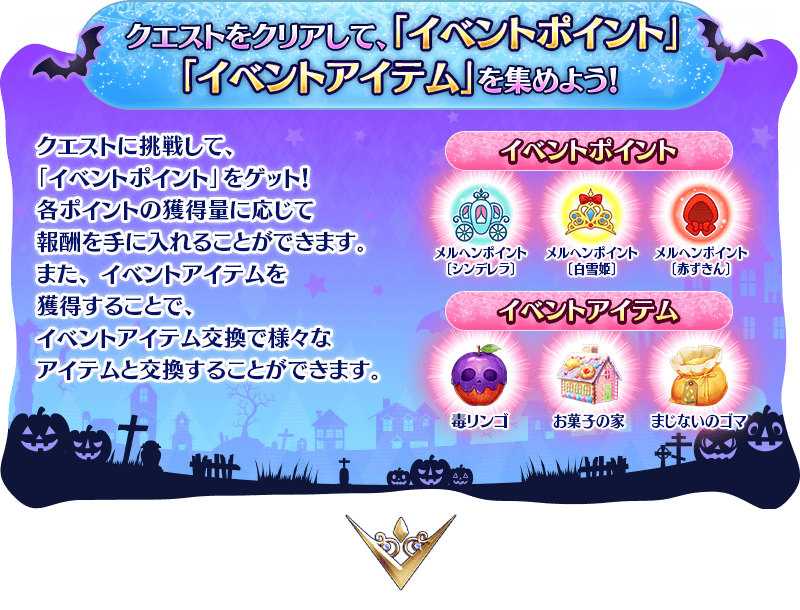
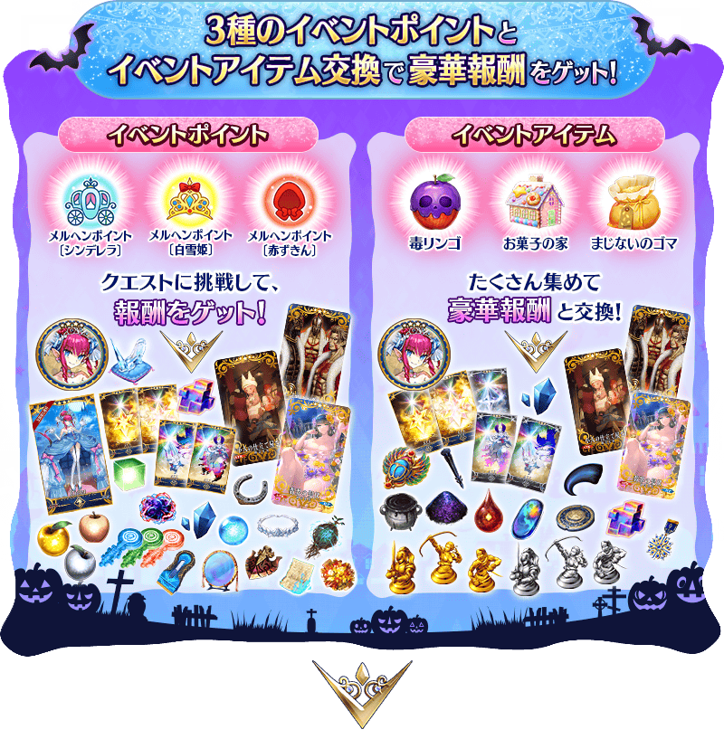
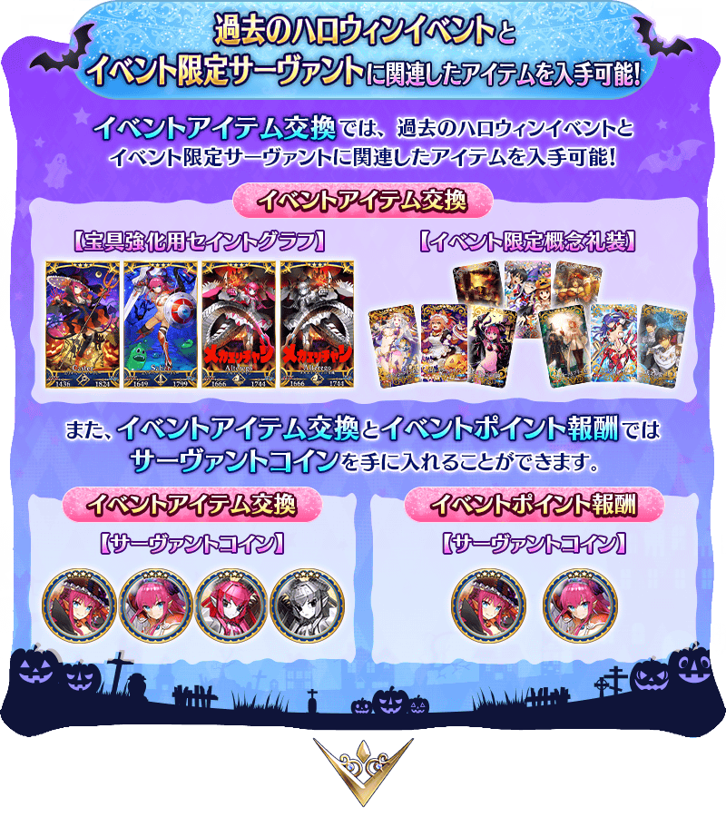
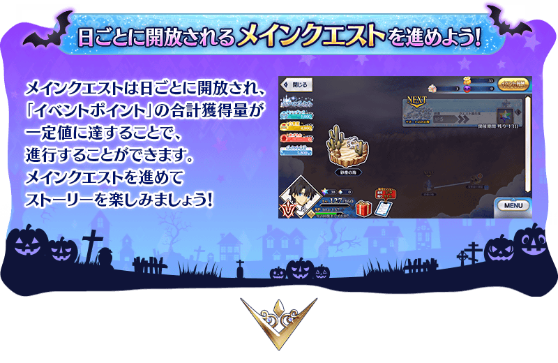
享受劇情的主線關卡將逐日開放。
推進主線關卡的話，活動限定從者「★4(SR)伊莉莎白・巴托里〔灰姑娘〕」將正式加入。
通過主線關卡第1節後，會開放收集活動道具的自由關卡。
【關卡的舉辦期間】
| 關卡的種類 | 舉辦期間 |
|---|---|
|
序幕(プロローグ) 主線關卡第1節 童話關卡 自由關卡 |
2021年10月20日(三) 19:30～ 11月3日(三) 11:59 |
|
主線關卡第2節 童話關卡 自由關卡 |
2021年10月21日(四) 17:00～ 11月3日(三) 11:59 |
|
主線關卡第3節 童話關卡 自由關卡 |
2021年10月22日(五) 17:00～ 11月3日(三) 11:59 |
|
主線關卡第4節 童話關卡 自由關卡 |
2021年10月23日(六) 17:00～ 11月3日(三) 11:59 |
|
主線關卡第5節 童話關卡 自由關卡 |
2021年10月24日(日) 17:00～ 11月3日(三) 11:59 |
|
主線關卡第6節 童話關卡 自由關卡 |
2021年10月25日(一) 17:00～ 11月3日(三) 11:59 |
|
主線關卡第7節 後記(エピローグ) 童話關卡 自由關卡 |
伊莉莎白・巴托里〔灰姑娘〕正式加入
2021年10月26日(二) 17:00～
11月3日(三) 11:59 |
※童話關卡會在推進主線關卡獲得一定值以上活動點數後開放。
主推進主線關卡獲得一定值以上活動點數，在活動地圖會開放「童話關卡」。
「童話關卡」是以各式各樣童話為主題在戰鬥挑戰，通過後能獲得許多報酬的關卡，務必試著挑戰吧！
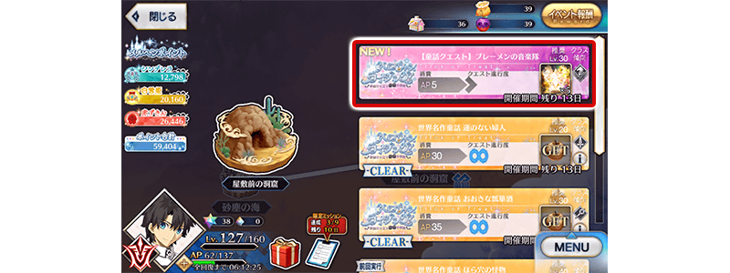
本活動的戰鬥中，裝備特定活動限定概念禮裝的話，對應概念禮裝的效果會提升特定敵人的追加出現率，增加畫面內登場的敵人數量。
※敵人數量最多增加到6名。
增加畫面內登場的敵人數量，變得可體驗至今為止別具一格的戰鬥體驗。
裝備活動限定概念禮裝來打倒更多敵人，更有效率地收集活動點數和活動道具！
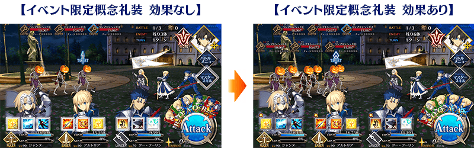
期間限定活動「萬聖節・崛起！ ～砂塵女王與暗黑使徒～」限定的新魔術禮裝「萬聖皇室(ハロウィン・ロイヤリティ)」登場！
通過特定主線關卡後，可入手新魔術禮裝「萬聖皇室」。
務必得到期間限定的貴重魔術禮裝吧！
活動限定從者入手在活動進行中獲得的専用素材「寶具強化専用靈基」後，可與平常時一樣寶具等級強化。
就算暫時加入狀態也能寶具等級強化，讓活動限定從者更強來推進活動吧。
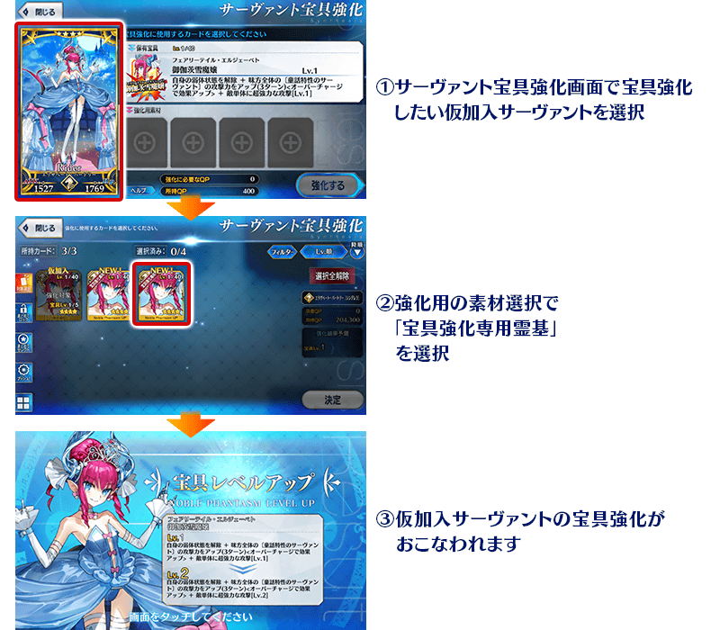
◆有關暫時加入從者的寶具等級強化的注意◆
※暫時加入的狀態下寶具等級強化的從者在活動期間中未正式加入的情況，在活動結束後會脫離。
※在活動期間中獲得的寶具強化専用靈基，活動舉辦期間結束後也不會消失。
※活動舉辦期間中無法靈基變還(販賣)寶具強化専用靈基。活動舉辦期間結束的話，會變成可靈基變還(販賣)。
※獲得寶具強化専用靈基時，無法獲得對象從者的「從者硬幣」。
※寶具強化専用靈基無法強化。
※寶具強化専用靈基無法在隊伍編成畫面編入隊伍。
過去在2015年～2017年舉辦的萬聖節活動中登場的限定從者寶具強化用卡面，在本活動中可在活動道具交換入手。
※只限在過去舉辦的萬聖節活動或舉辦中的期間限定活動「恰赫季斯・萬聖節・三部曲 超豪華總集篇！」中正式加入的活動限定從者才可獲得。
※各活動限定從者與同個從者的寶具強化用卡面各自入手「累計6位以上」的話，第6位以後，每新入手1位的話會將稀有稜鏡1個送到禮物箱。
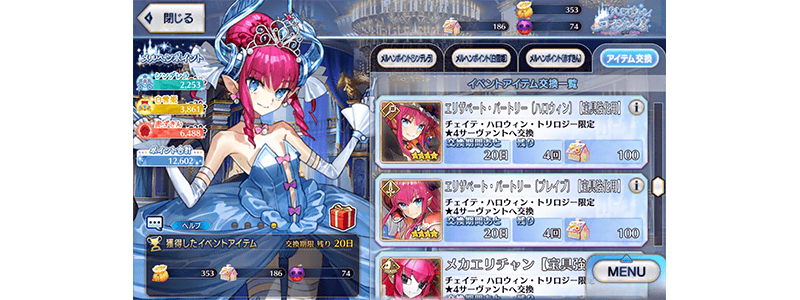
另外，從者硬幣可在活動點數報酬、道具交換入手。
各自可入手最多下述的枚數。
※活動道具交換中可入手的從者硬幣只限在過去舉辦的萬聖節活動或舉辦中的期間限定活動「恰赫季斯・萬聖節・三部曲 超豪華總集篇！」中正式加入的活動限定從者才可獲得。
★4(SR)伊莉莎白・巴托里〔萬聖節〕
・活動點數報酬:最多180枚 ・活動道具交換:最多300枚
★4(SR)伊莉莎白・巴托里〔Brave〕
・活動點數報酬:最多180枚 ・活動道具交換:最多300枚
★4(SR)機械伊莉醬
・活動道具交換:最多480枚
★4(SR)機械伊莉醬Ⅱ號機
・活動道具交換:最多480枚
關於可正式加入該活動限定從者地期間限定活動「恰赫季斯・萬聖節・三部曲 超豪華總集篇！」，請自下述橫幅確認。
【10月27日(三) 17:00追記】
以通過期間限定活動「萬聖節・崛起！ ～砂塵女王與暗黑使徒～」所有主線關卡及「終局特異點」的御主做為對象，開放高難易度的「挑戰關卡」。
「挑戰關卡」就算通過後也不會消失，可以變更從者和概念禮裝的組合等後無限次挑戰。
※關卡通過報酬、戰利品、御主EXP、魔術禮裝EXP、絆點數只可在初次通過時獲得。
◆挑戰關卡開放時間◆
2021年10月27日(三) 17:00～
◆挑戰關卡參加條件◆
滿足以下條件的御主才能參加
・通過期間限定活動「萬聖節・崛起！ ～砂塵女王與暗黑使徒～」的所有主線關卡
・通過「終局特異點」
◆挑戰關卡初次通過報酬◆
傳承結晶 1個
超值攻略方法・其1
本活動的期間中，強化「★4(SR)伊莉莎白・巴托里〔灰姑娘〕」時的獲得經驗值變成2倍。
是讓成為活動加成對象的「★4(SR)伊莉莎白・巴托里〔灰姑娘〕」等級一口氣上升的機會！
◆舉辦期間◆
2021年10月20日(三) 19:30～11月3日(三) 11:59
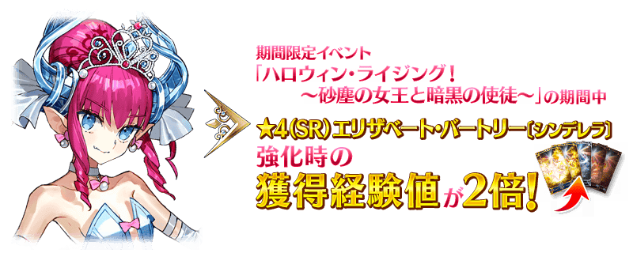
超值攻略方法・其2
本活動的期間中，下表的從者在活動關卡中會得到「自身的攻擊的威力提升」與「絆點數獲得量提升」的加成！
強化對象從者，挑戰活動吧！
※活動加成的效果量因從者而異。
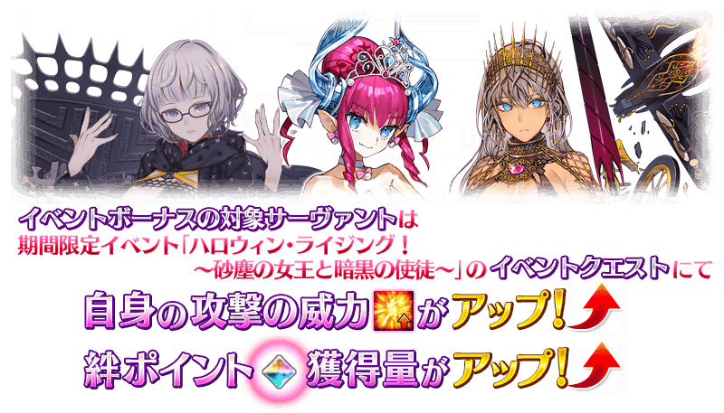
【活動加成的效果與對象從者】
| 自身的 攻擊威力 |
絆點數 獲得量 |
職階 | 稀有度 | 從者名 |
|---|---|---|---|---|
| ＋100% | 只限自身 ＋50% |
Rider | ★★★★ | 伊莉莎白・巴托里 〔灰姑娘〕 |
| Foreigner | ★★★★★ | 雅克・德・莫萊 | ||
| ＋50% | 只限自身 ＋20% |
Saber | ★★★★★ | 莫德雷德 |
| ★★★★ | 伊莉莎白・巴托里 〔Brave〕 |
|||
| ★★★★ | 騎士德翁 | |||
| ★★★★ | 渡邊綱 | |||
| ★★★ | 貝德維爾 | |||
| Archer | ★★★★★ | 拿破崙 | ||
| ★★★★ | 潔諾比亞 | |||
| ★★★ | 俵藤太 | |||
| ★★★ | 羅賓漢 | |||
| Lancer | ★★★★ | 伊莉莎白・巴托里 | ||
| Caster | ★★★★ | 伊莉莎白・巴托里 〔萬聖節〕 |
||
| Alterego | ★★★★ | 機械伊莉醬 | ||
| ★★★★ | 機械伊莉醬Ⅱ號機 | |||
| ＋30% | 只限自身 ＋20% |
Saber | ★★★★ | 齋藤一 |
| Lancer | ★★★ | 赫克特 | ||
| Caster | ★★★★★ | 雪赫拉莎德 (不夜城的Caster) |
||
| Assassin | ★★★★★ | 李書文 |
※就算成為對象從者也會有未在本活動的主線劇本登場的情況。 ※自10月13日(三) 17:00，在從者選擇畫面和從者強化畫面等，追加活動加成篩選器。由於是只顯示於活動活躍從者的便利功能，敬請活用。
超值攻略方法・其3
裝備活動限定概念禮裝與期間限定概念禮裝的話，在活動中會受到各式各樣的恩惠。
裝備可靠活動點數報酬和活動道具交換入手的活動限定概念禮裝「★5(SSR)翡翠の髪状」「★5(SSR)小人の仕立て屋さん」「★5(SSR)ベア・キングス」装備的話的話，在期間限定活動「萬聖節・崛起！ ～砂塵女王與暗黑使徒～」中自身的攻擊威力會提升。 另外，特定敵人的追加出現率提升25%。
並且，裝備在聖晶石召喚Pick Up的期間限定概念禮裝「★5(SSR)銀花の白き姫」「★4(SR)ちいさな猫のロンド」「★3(R)プロタゴニスタ」的話，活動道具「毒蘋果」「糖果之家」「魔法芝麻」それぞれ的掉落獲得數會提升。
※請注意各關卡的特定敵人追加出現率就算顯示100%以上的情況，實際的追加出現率也會是100%。 ※請注意各關卡的道具掉落率並非100％。
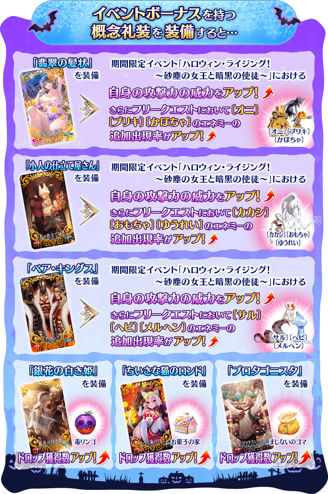
| 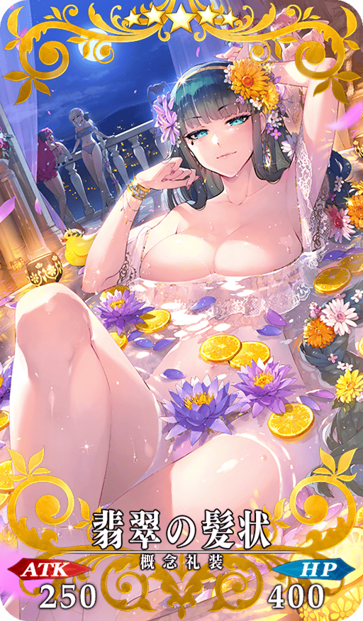 |
★★★★★SSR
|
| 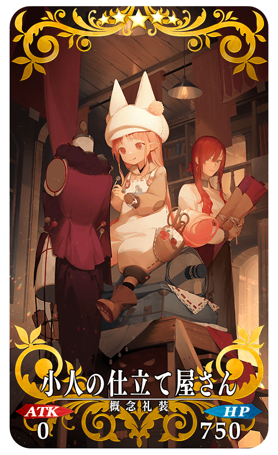 |
★★★★★SSR
|
| 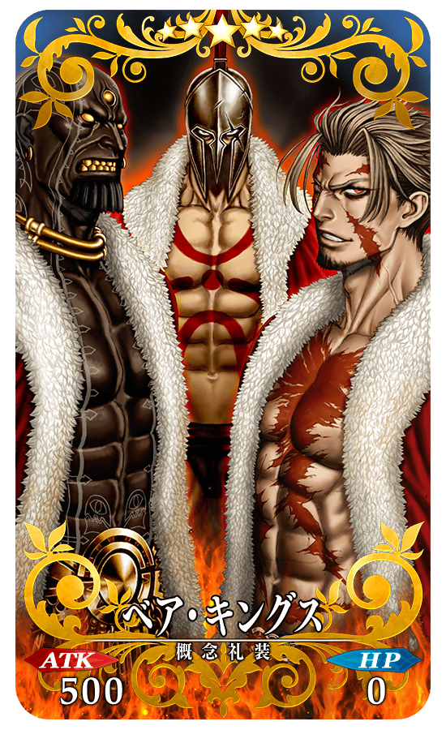 |
★★★★★SSR
|
◆關於過去萬聖節活動中登場的活動限定概念禮裝◆
本活動中可在活動道具交換入手在2015年～2017年舉辦的萬聖節活動中登場的9種活動限定概念禮裝。
關於過去的活動限定概念禮裝的詳細請確認以下。
【「歌詠南瓜城的冒險 ～狂亂派對2015～」
活動限定概念禮裝】
【「萬聖節・歸來！ 超極☆大南瓜村 ～接著邁向冒險……～」
活動限定概念禮裝】
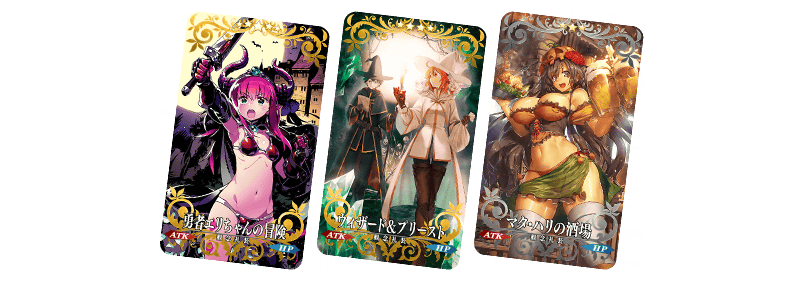
【「萬聖節・強襲！ 魔之建築攀登者／姬路城大決戰」
活動限定概念禮裝】
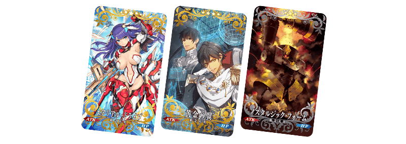
◆有關概念禮裝的注意◆
請注意可在活動道具交換入手的在2015年～2017年舉辦的萬聖節活動中登場的限定概念禮裝，在期間限定活動「萬聖節・崛起！ ～砂塵女王與暗黑使徒～」中沒有活動加成。
|
【活動限定】 |
| 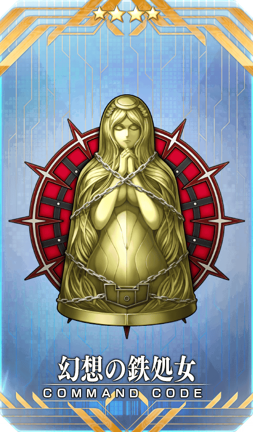 |
★★★★SR |
| 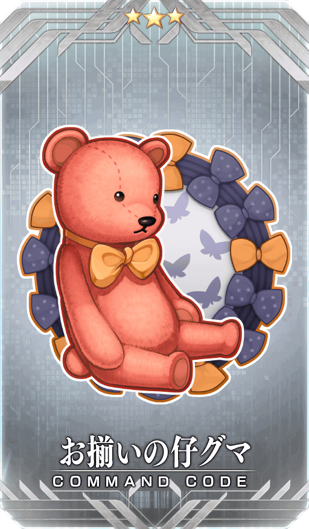 |
★★★R |

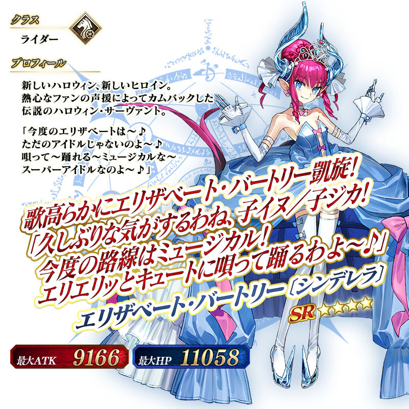
◆靈基再臨◆
使用能靠主線關卡的進行及活動點數報酬入手的「偶像灰姑娘舞鞋(アイドル・シンデレラ・シューズ)」，重複4次靈基再臨的話，卡面會有所變化！
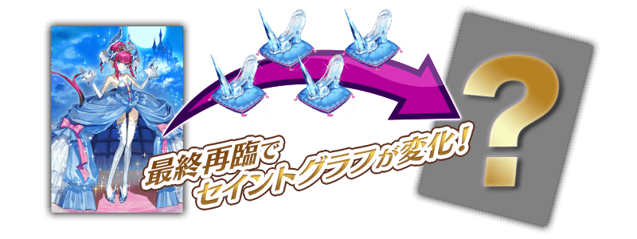
※「★4(SR)伊莉莎白・巴托里〔灰姑娘〕」不會隨靈基再臨使戰鬥角色的外觀變化。
◆關於「★4(SR)伊莉莎白・巴托里〔灰姑娘〕」的從者硬幣◆
「★4(SR)伊莉莎白・巴托里〔灰姑娘〕」的從者硬幣在本活動中可在活動點數報酬、活動道具交換入手。
各自可入手最多下述的枚數。
・活動點數報酬:最多180枚 ・活動道具交換:最多300枚

介紹「★4(SR)伊莉莎白・巴托里〔灰姑娘〕」的寶具演出！
「★4(SR)伊莉莎白・巴托里〔灰姑娘〕」的寶具演出於一部份裝置有對應全螢幕顯示。
活動道具可自點擊管理室(ターミナル)畫面右上「活動報酬」鍵所顯示的「活動道具交換」畫面，交換以下的道具。 ※傳承結晶、「★4(SR)伊莉莎白・巴托里〔灰姑娘〕」的從者硬幣要進行在10月26日(二)開放的本活動後才能交換。
◆交換期間◆
2021年10月20日(三) 19:30～11月10日(三) 11:59
※活動道具交換期間結束後「毒蘋果」「糖果之家」「魔法芝麻」會消失。
◆能用毒蘋果交換的道具◆
 |
【活動限定概念禮裝】 【2015年～2017年萬聖節活動限定概念禮裝】 【寶具強化用卡面】 【從者硬幣】 【技能強化＆靈基再臨素材】 【靈基再臨素材】 【其他道具】 |
◆能用糖果之家交換的道具◆
 |
【活動限定概念禮裝】 【2015年～2017年萬聖節活動限定概念禮裝】 【寶具強化用卡面】
【從者硬幣】 【技能強化＆靈基再臨素材】 【靈基再臨素材】 【其他道具】 |
◆能用魔法芝麻交換的道具◆
| 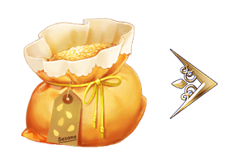 |
【活動限定概念禮裝】 【2015年～2017年萬聖節活動限定概念禮裝】 【從者硬幣】 【技能強化＆靈基再臨素材】 【其他道具】 |
【10月22日(五) 17:00追記】
其他還有，
・萬聖節・崛起！Pick Up召喚
・萬聖節・崛起！Pick Up2召喚
・恰赫季斯・萬聖節・三部曲 超豪華總集篇！
・萬聖節回歸宣傳活動
以期間限定舉辦中！
關於詳情，請自下述橫幅確認。
■「萬聖節・崛起！Pick Up召喚」詳細情報

■「萬聖節・崛起！Pick Up2召喚」詳細情報

■「恰赫季斯・萬聖節・三部曲 超豪華總集篇！」詳細情報

■「萬聖節回歸宣傳活動」詳細情報